KriegsStickers
- Downloads
- 96
A collection of stickers that look best on clothing / armor featuring Umbrella Corporation logos, SCP Foundation, some WIP cultist symbols and Crusader - Orthodox Crosses I made for my friends and I. Since I went through the effort to make them I’m hoping others will enjoy them as well. I plan on adding more in the future.
Umbrella Corporation
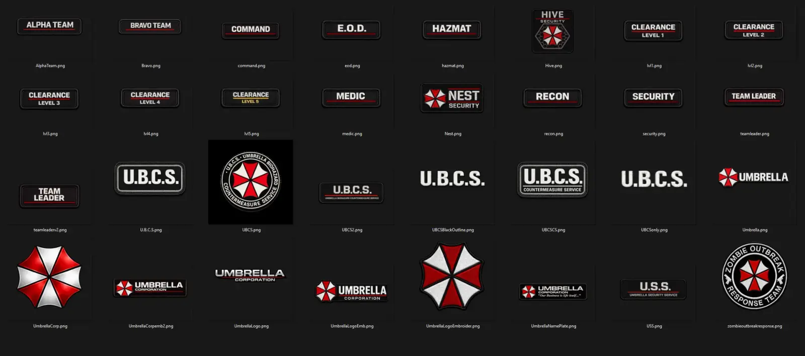
EFT Cultist
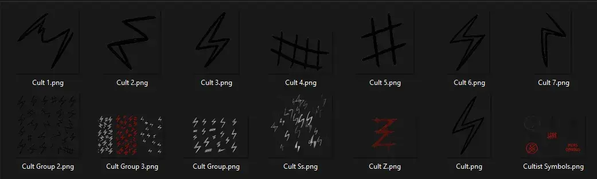
Crosses
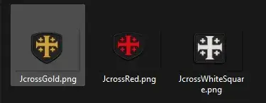
SCP Foundation
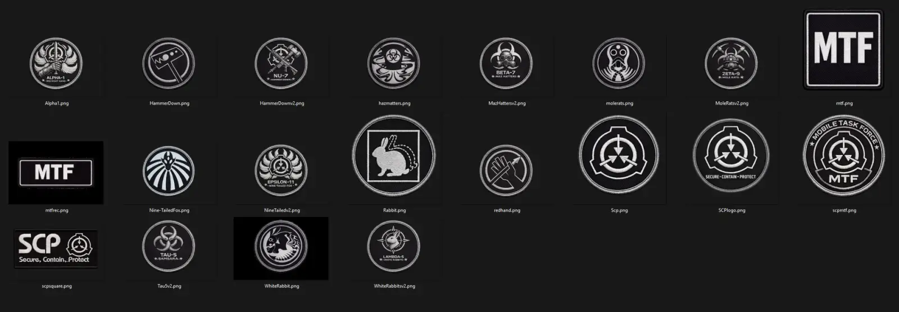
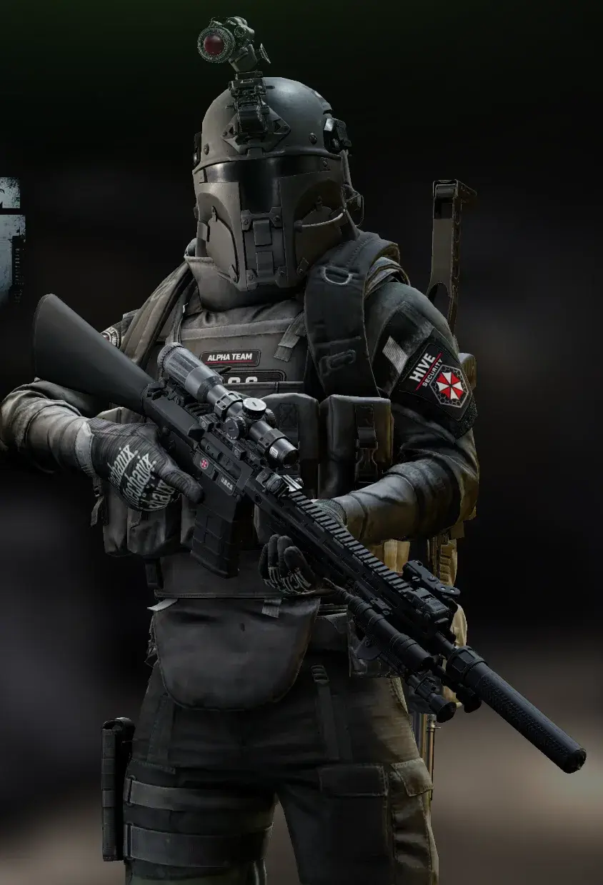
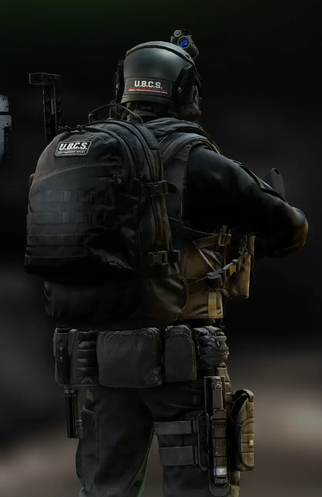
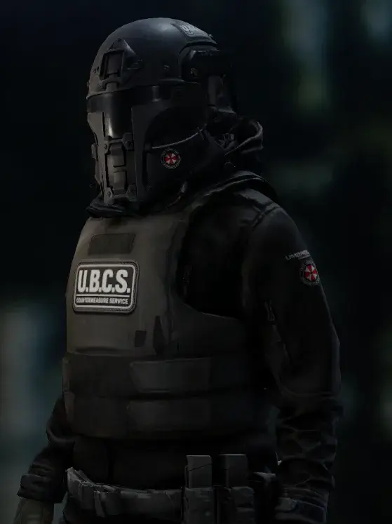
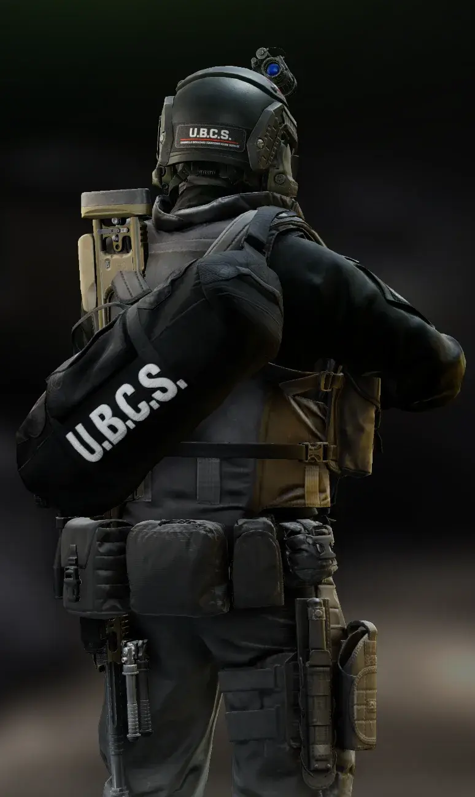
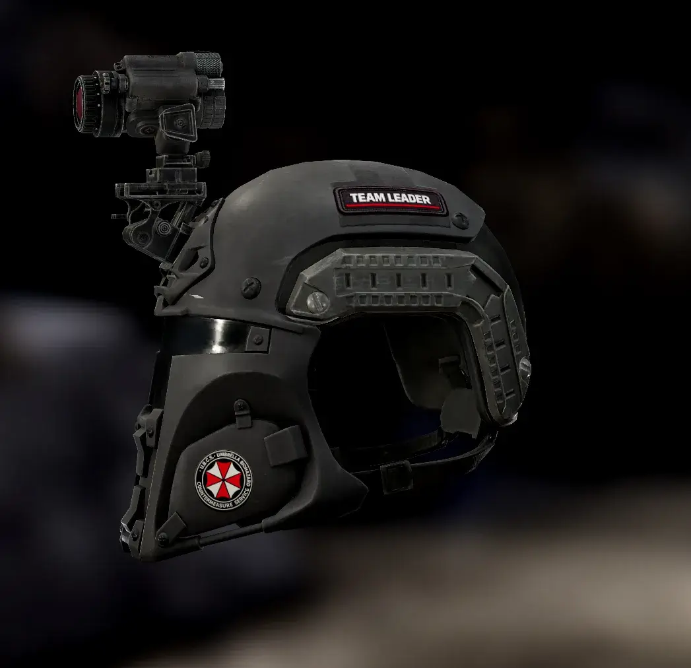
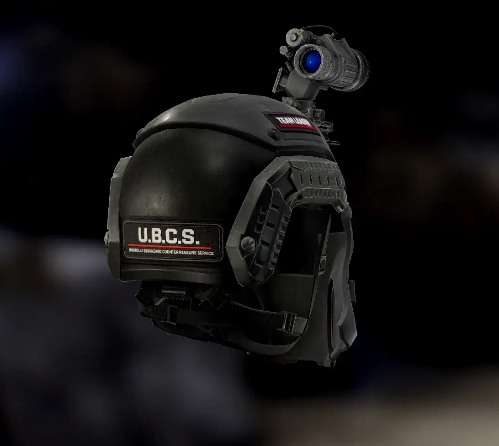
Place the Bepinex Folder into your root spt folder - for updates simply click yes to all when it asks to overwrite.
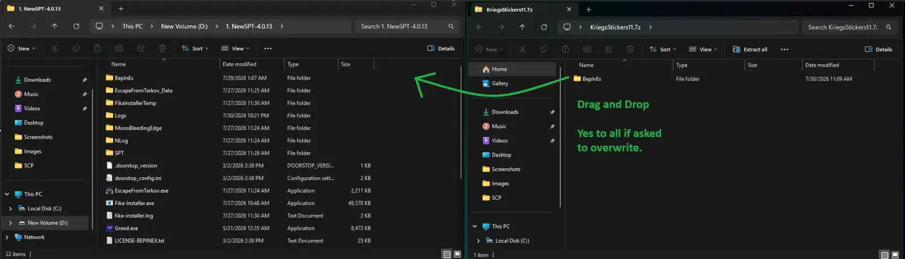
Version
1.1.1
A collection of stickers that look best on clothing / armor featuring Umbrella Corporation logos, SCP Foundation, some WIP cultist symbols and Crusader - Orthodox Crosses I made for my friends and I. Since I went through the effort to make them I’m hoping others will enjoy them as well. I plan on adding more in the future.
Version
1.1.0
Added SCP patches.
Version
1.0.0
v1.0 Initial Release